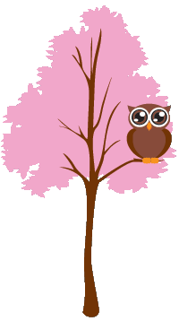

ini adalah suatu adadadaa adadadadafafafafadafafafafafafafa adadadadafafafafadafafafafafafafa adadadadafafafafadafafafafafafafa yang makdadajfiafhagh ,width: 50%: Membatasi lebar agar tidak memanjang. Anda bisa menggantinya dengan angka tetap seperti 400px jika ingin ukurannya pasti. margin: 25px auto: Angka 25px mengatur jarak atas-bawah, sedangkan auto pada sisi kiri dan kanan adalah cara standar CSS untuk menggeser elemen blok ke tengah ruangan. Tips tambahan: Jika Anda ingin kolom tersebut fleksibel di layar HP, gunakan max-width sebagai pengganti width: max-width: 500px; dan width: 90%; 1 situs Styling Best Practices untuk Tailwind CSS | theodorusclarence.com 18 Des 2021 — Width 90% akan memberikan padding ketika user membuka website dalam mobile view dan web akan di constrain ketika containernya suda... theodorusclarence.com
in
ini